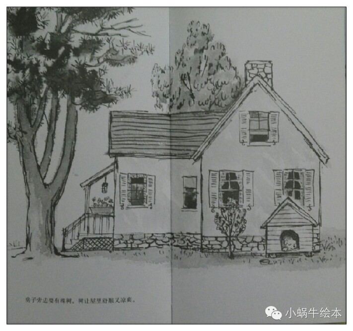

树真好
树真好。高高的大树遮住了天空。
树长在河边，树长在山谷，树长在高高的山顶上。
很多很多树在一起，就叫做大森林。
树让一切都变得那么好。
如果你只有一棵树，那也很好。
因为，树上有好多树叶。
整个夏天，都可以听到风吹树叶，沙沙地响。
秋天，树叶纷纷落下，我们在落叶中玩耍。
一双小脚蹚着树叶，连滚带爬好不欢畅。
我们用树叶造房子，把落叶堆成山，点燃篝火。
树真好。它长着粗壮的树干和枝条。
我们爬到树上，看各家的院子。
我们坐在树杈上，静静地思考。
我们还在树上，嬉笑玩耍，扮演海盗。
如果它是苹果树，我们就爬上去摘苹果。
猫儿蹿到树上，躲开追它的狗。
鸟儿在树上做巢，快乐地生活。
干枯的树枝从树上跳下来，让我们拿来在沙滩上画画儿。
树真好。树上可以荡秋千，或者，挂一篮鲜花。
当你休息的时候，锄头也靠着树上歇会儿吧。
树真好。它可以遮住阳光，让树下有大片的阴凉。
奶牛卧在树荫下，躲开了夏天的热浪。
人们在树荫下野餐乘凉，宝宝在车里睡得香。

房子旁边要有棵树。树让屋里舒服又凉爽。
这棵树能挡住狂风，保护你家的房顶。
自己动手来种棵树吧。
挖一个大坑，栽一棵小树，浇上好多水，再轻轻填上土。
最后，别忘了把铁锹挂回车库。
一天又一天，一年又一年，眼看着小树越长越高。
你骄傲地告诉每一个人，“那是我种的树。”
人人都想有棵树。
他们回到家中，每人种下一棵树。